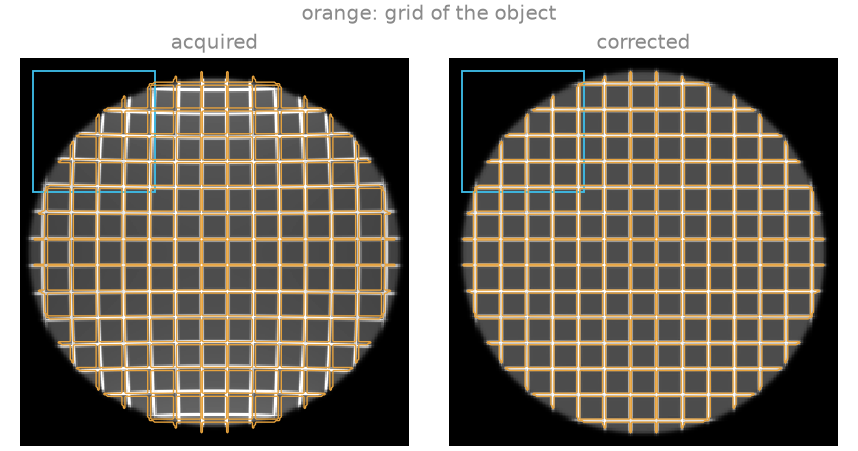
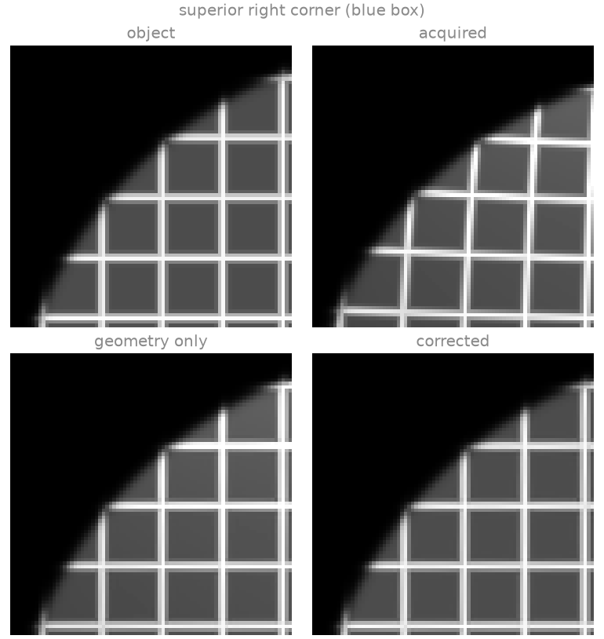
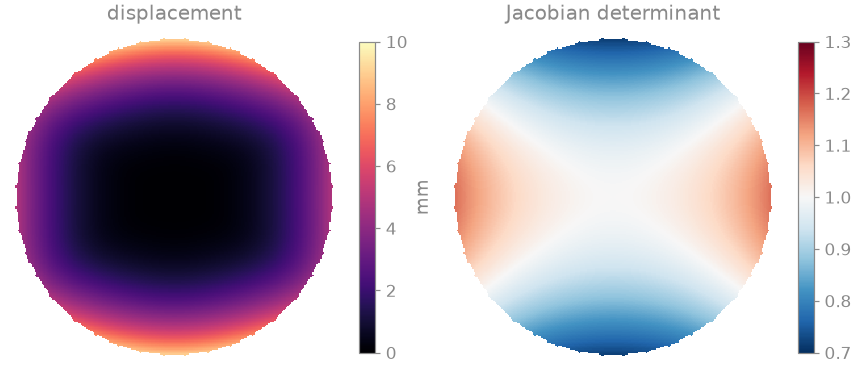
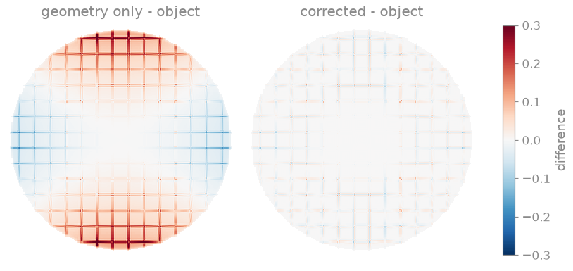
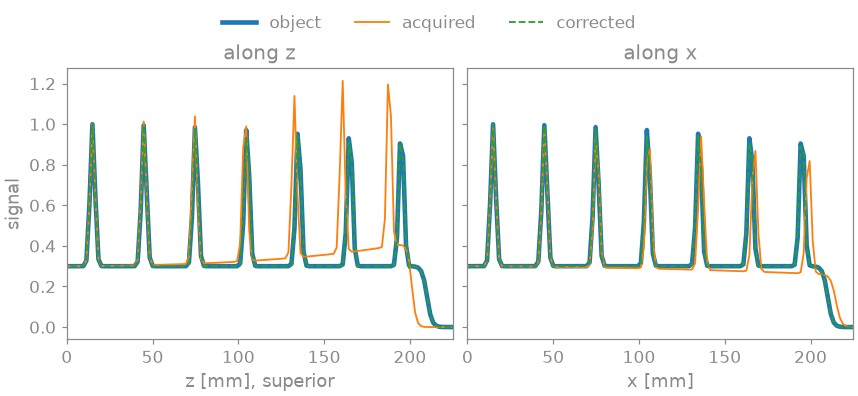

Note
Go to the end to download the full example code.
Gradient nonlinearity#
Spatial encoding assumes that each gradient field varies linearly with position. The field of a real gradient coil departs from linearity with the distance from isocentre, so a spin is encoded at a position displaced from its true one: the image is warped, by a few millimetres at the edge of a head-sized field of view and by centimetres at the edge of a body-sized one, and the voxel volume changes with the warp. The displacement is a property of the coil, stated by its manufacturer as the coefficients of a spherical-harmonic expansion of each gradient field [1]; the correction evaluates that expansion at every voxel and resamples the image at the positions where the voxels were encoded.
This example warps a grid phantom in a coronal slice over a 450 mm field of
view with a coil described by third-order harmonics, and corrects it with
bartorch.tools.Gradunwarp. The coefficients describe a generic
coil, defined in the code; no manufacturer’s table is used.
Prerequisites. Tensors and commands.
Learning objectives
Describe a gradient coil’s nonlinearity by its spherical-harmonic coefficients with
GradientCoefficients.Relate the displacement to the distance from isocentre and to the gradient axis.
Correct the geometry and the intensity of an image with
Gradunwarp, and separate the two.Place an image in scanner coordinates by its orientation and field of view.
import numpy as np
import torch
from scipy import ndimage
import bartorch.tools as bt
The coil#
GradientCoefficients holds the cosine and sine
coefficients \(\alpha_{nm}\) and \(\beta_{nm}\) of each gradient
field’s departure from linearity, in the Siemens convention: harmonics
normalized over a reference radius \(R_0\), and positions in scanner
coordinates, with \(z\) along the bore. An all-zero table is a linear
coil.
Each gradient field is odd along its own axis, so its lowest-order nonlinear terms are of third order: \(\alpha_{31}\) for the \(x\) gradient, \(\beta_{31}\) for the \(y\) gradient and \(\alpha_{30}\) for the \(z\) gradient, whose harmonic is proportional to \(z\,(2z^2 - 3x^2 - 3y^2)\). The signs and sizes of the terms decide where the image is compressed and where it is stretched. The \(z\) gradient of a short whole-body coil is usually the least linear, and is given the largest term here.
ORDER = 3
alpha = np.zeros((3, ORDER + 1, ORDER + 1))
beta = np.zeros_like(alpha)
alpha[0, 3, 1] = -0.04 # x gradient
beta[1, 3, 1] = -0.04 # y gradient
alpha[2, 3, 0] = -0.06 # z gradient
coil = bt.GradientCoefficients(
basis="normalized", alpha=alpha, beta=beta, reference_radius_mm=250.0
)
The slice#
A coronal slice through isocentre, 256 x 256 over a 450 mm field of view
(1.8 mm voxels): rows run from superior to inferior along \(-z\) and
columns from right to left along \(x\). The orientation matrix gives,
for each array axis, the scanner direction along which it increases.
Gradunwarp evaluates the expansion at every voxel
of the corrected grid; its source_grid is the index into the acquired
image at which each voxel was encoded.
SIZE, FOV_MM = 256, 450.0
VOXEL_MM = FOV_MM / SIZE
coronal = np.array([[0.0, 1.0], [0.0, 0.0], [-1.0, 0.0]]) # columns: row axis, column axis
unwarp = bt.Gradunwarp(coil, shape=(SIZE, SIZE), fov_mm=(FOV_MM, FOV_MM), orientation=coronal)
index = np.stack(np.meshgrid(np.arange(SIZE), np.arange(SIZE), indexing="ij"), axis=-1)
displacement_mm = (unwarp.source_grid - index) * VOXEL_MM
offset_mm = (index - (SIZE - 1) / 2) * VOXEL_MM
for r in (100, 150, 200):
along_z = np.abs(offset_mm[..., 0]) - r
along_x = np.abs(offset_mm[..., 1]) - r
on_z = (np.abs(along_z) < VOXEL_MM / 2) & (np.abs(offset_mm[..., 1]) < VOXEL_MM)
on_x = (np.abs(along_x) < VOXEL_MM / 2) & (np.abs(offset_mm[..., 0]) < VOXEL_MM)
print(
f"{r} mm from isocentre: displacement {np.abs(displacement_mm[on_z, 0]).mean():4.1f} mm "
f"along z, {np.abs(displacement_mm[on_x, 1]).mean():4.1f} mm along x"
)
100 mm from isocentre: displacement 0.9 mm along z, 0.5 mm along x
150 mm from isocentre: displacement 3.3 mm along z, 1.8 mm along x
200 mm from isocentre: displacement 7.6 mm along z, 4.1 mm along x
The acquisition#
The object is a grid phantom: a disc of 420 mm diameter carrying lines 30 mm apart, defined in closed form so it can be evaluated at any position. The acquired image at index \(p\) holds the object at the position \(r\) encoded there, the solution of \(r + d(r) = p\), found by fixed-point iteration. Its intensity is divided by the Jacobian determinant of the mapping: a voxel whose volume the nonlinearity enlarges collects the signal of a larger region.
def grid_phantom(position):
"""Disc with a grid of lines, at positions in voxel units."""
y, x = position[..., 0] - (SIZE - 1) / 2, position[..., 1] - (SIZE - 1) / 2
spacing = 30.0 / VOXEL_MM
lines = np.maximum(
np.exp(-0.5 * (((y % spacing) - spacing / 2) / 0.8) ** 2),
np.exp(-0.5 * (((x % spacing) - spacing / 2) / 0.8) ** 2),
)
disc = 1.0 / (1.0 + np.exp((np.hypot(x, y) - 210.0 / VOXEL_MM) / 0.8))
return disc * (0.3 + 0.7 * lines)
def at(values, position):
return ndimage.map_coordinates(values, np.moveaxis(position, -1, 0), order=3, mode="nearest")
shift = unwarp.source_grid - index # voxels
encoded = index.astype(float)
for _ in range(30):
encoded = index - np.stack([at(shift[..., c], encoded) for c in range(2)], axis=-1)
acquired = grid_phantom(encoded) / at(unwarp.jacobian_grid, encoded)
truth = grid_phantom(index.astype(float))
Correction#
The correction resamples the acquired image at the source grid by cubic
B-spline interpolation and multiplies it by the Jacobian determinant, which
restores the intensity. jacobian=False corrects the geometry only.
corrected = unwarp(torch.as_tensor(acquired, dtype=torch.float32)).numpy()
geometry_only = bt.Gradunwarp(
coil, shape=(SIZE, SIZE), fov_mm=(FOV_MM, FOV_MM), orientation=coronal, jacobian=False
)(torch.as_tensor(acquired, dtype=torch.float32)).numpy()
def nrmse(image):
return float(np.linalg.norm(image - truth) / np.linalg.norm(truth))
print(f"acquired NRMSE {nrmse(acquired):.3f}")
print(f"geometry only NRMSE {nrmse(geometry_only):.3f}")
print(f"corrected NRMSE {nrmse(corrected):.3f}")
acquired NRMSE 0.427
geometry only NRMSE 0.118
corrected NRMSE 0.025





The displacement grows with the cube of the distance from isocentre: the centre of the field of view is unaffected, and at 200 mm the grid lines are displaced by several millimetres. Along \(z\) the image is compressed towards isocentre: the Jacobian determinant is below one, each voxel collects the signal of a larger region, and the periphery is brighter. Along \(x\) it is stretched, darker, and the lines are drawn outwards; off the axes the \(z\) displacement follows its harmonic and changes sign where \(2z^2 = 3x^2\). The geometry-only correction puts the lines back in place and leaves the intensity error of the Jacobian; the full correction removes both, and its residual is the error of interpolating the acquired image, largest on the thin lines where compression has undersampled them.
For a real coil, from_file()
reads the manufacturer’s table, and
from_mrd() and
from_affine() take the geometry of the
image from an MRD header or an affine. Scanners apply a two-dimensional
correction in the plane of the slice by default; the through-plane
displacement moves signal between slices and requires the correction of the
whole volume.
References#
Total running time of the script: (0 minutes 1.012 seconds)